“There's WAY too much to memorise… so many confusing terms.”
Singapore's only O Level Pure/G3 Bio specialist
The One Missing Key to Go from Fail to A1 While Cutting Study Time by 90%
The average TBT student makes a 2.3 grade jump, roughly from C5 to A2.
If a student doesn't absolutely love the $95 trial lesson, they get a full refund.
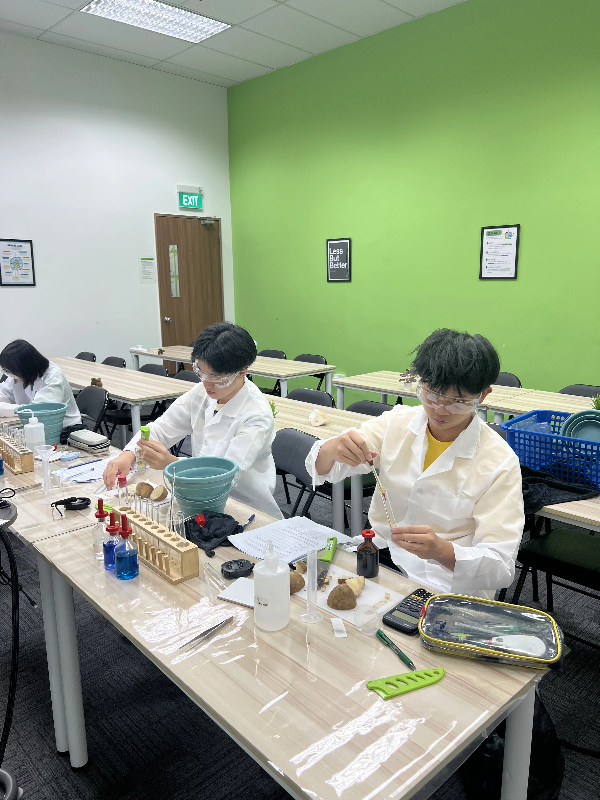
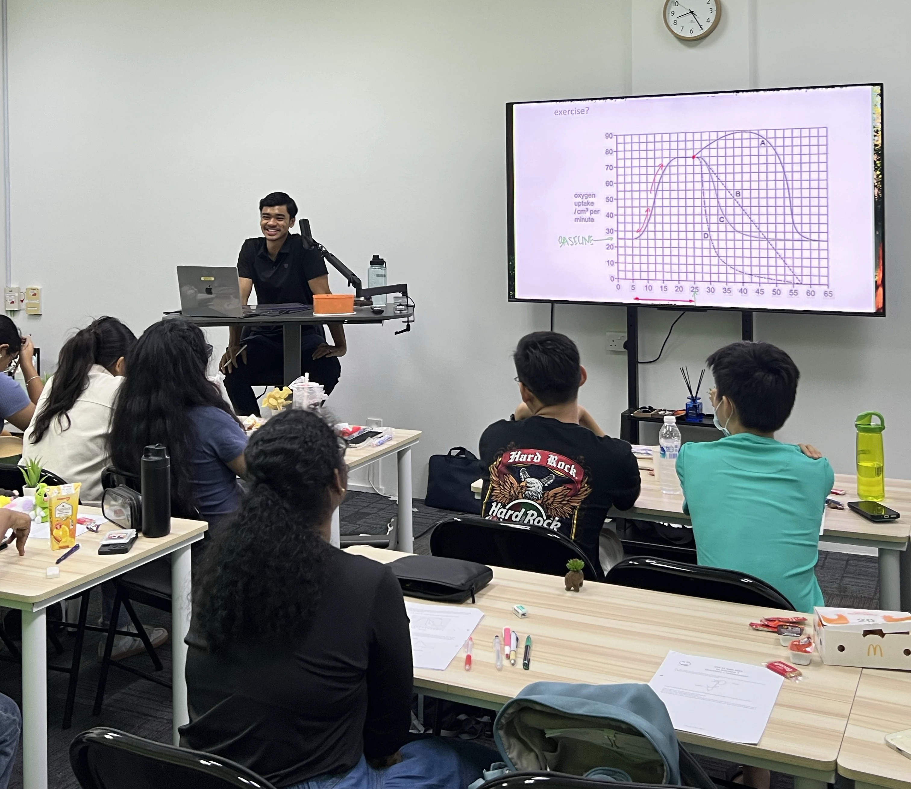
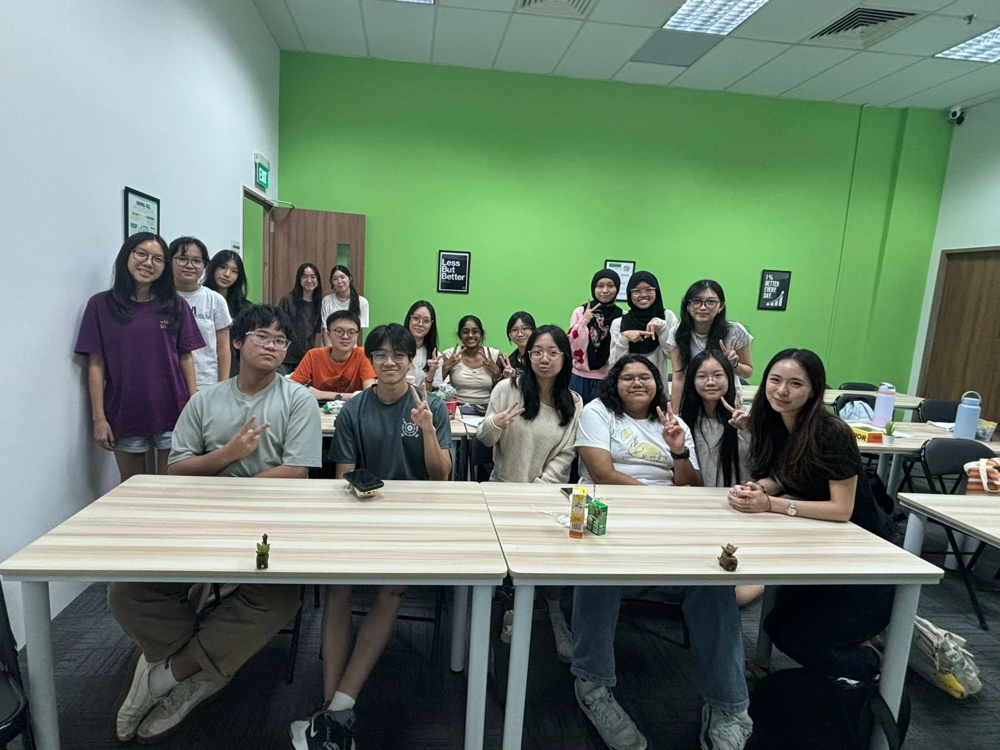

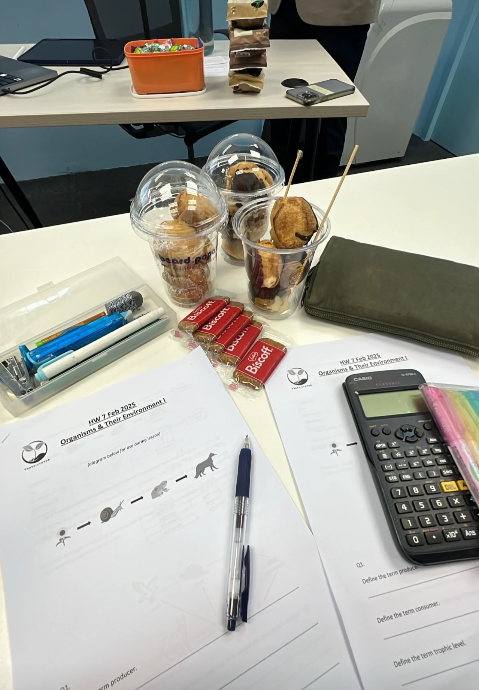
Image 1 of 5
The struggle is real
Does Biology Feel Like This?
“I already wrote down a very detailed answer… how come I didn't get the points?”
“School Bio skims through the content too fast. I don't understand concepts deeply enough.”
Sound familiar? Many TBT students started exactly here.
By the End of the Year, They’re Telling Us:
“Unlike school teachers who just merely read off the slides, these tutors had somehow made such a content heavy subject into something engaging.”
“After using TBT's notes and memorising all the shortcuts I managed to get the model template answer and memorise it easily.”
“Very knowledgeable and has his own personal touch to everything he does and genuinely cares for the students.”
Proven across Singapore
Here’s the Track Record
Students taught across 98 Singapore schools
Score A1, A2, or B3, despite 69% starting at B4 or lower
Average grade jump, roughly C5 to A2
Score an A distinction


O Level G3 / Pure Biology
ThatBioTutor’s FastTrack System Helps Students Score A1/A2 Without the Endless Revision Grind
Why should students write their own notes, make their own flashcards, and hunt for exam keywords alone, when it’s already done for them?

01 · Content & understanding
Find What Matters Instantly
Other Bio students: Dig through school notes and the textbook, figure out what's actually important, and rewrite it all from scratch.
TBT students + FastTrack: Struggling to recall a topic? Just Ctrl+F through our detailed visual notes, or watch crash course clips (think: Netflix, but for Bio.)

02 · Memory
Shortcuts That Actually Stick
Other Bio students: Read, reread, blurt out, copy out again and again and hope it sticks by exam day.
TBT students + FastTrack: Students never have to worry about forgetting. Confusing terms turn into memory shortcuts that stick, like “Don't Have Bag” for liver functions, backed by ready-made flashcards for long-term retention. The logic just clicks, so the material still sticks long after exams are over.

03 · Answering skills (OEQ)
Know the Exact Keywords That Score
Other Bio students: Vomit out everything they know and hope it hits the right keywords.
TBT students + FastTrack: TBT Commonly Asked Questions database contains every question type, with exact keywords and phrasing that score full marks. No guessing, and time to spare in the exam.
04 · Practical sessions (20% of grade)
Protect the Full 20% for Paper 3
Other Bio students: Severely lack practice in school and hope the exam tests an experiment they've actually done before.
TBT students + FastTrack: Optional hands-on practical sessions covering the most commonly tested experiments, so students walk into Paper 3 with the hand-eye coordination and confidence to protect the full 20%.

05 · Support
Get Help the Same Day
Other Bio students: Save up questions and wait for the next lesson.
TBT students + FastTrack: Message your tutor anytime. Get help same day instead of waiting 7 days. Students get detailed, easy-to-understand explanations, truly solving their doubts knowing the answers are accurate to O level syllabus.
This is the FastTrack System: the one missing key. Everything students would normally have to build themselves, already built for them.
Don't just take our word for it
Trusted by Students from 98 Schools Across Singapore
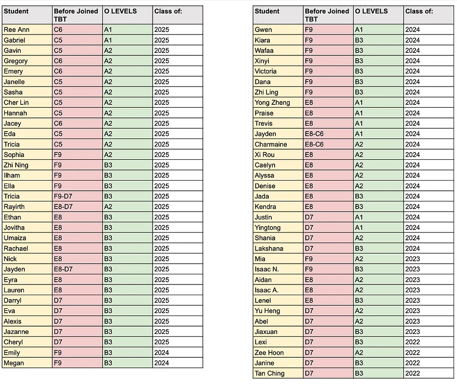
Some of Our Biggest Grade Jumps
There are many more. Students come in feeling lost, then leave knowing exactly what to learn, remember, and write.
“The notes are incredibly concise. They helped me clear the syllabus faster and memorise content more efficiently.”
Specialist guidance
Meet Your Tutors
Mr Keefe
Founder
Ms Chelsea
Pure Biology specialist
Ms Jamie
Pure Biology specialist
Ms Ng
Ex-MOE academic adviser
Consistent lesson quality
How TBT Ensures Every Class Is Excellent
Rigorous Screening
All tutors pass rigorous screening. It can take 1+ month before teaching their first class.
Weekly Coaching
Weekly tutor coaching sessions. Every TBT tutor is mentored by Mr Keefe each week.
Standardised Methods
All tutors follow the same standardised content and teaching methods. Every class ends with a student feedback form, reviewed and acted on weekly.
Paper 3 confidence
Real Practical Sessions. Real Practice.
Paper 3 makes up 20% of the grade, and most students walk in undertrained. TBT students can opt in to additional hands-on sessions, training on the exact experiment types most commonly tested in Paper 3, well before exam day.
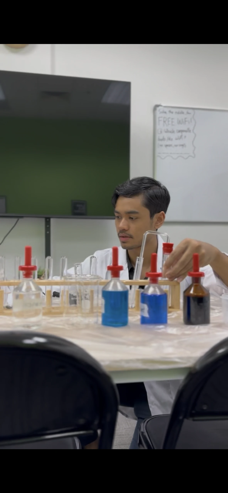
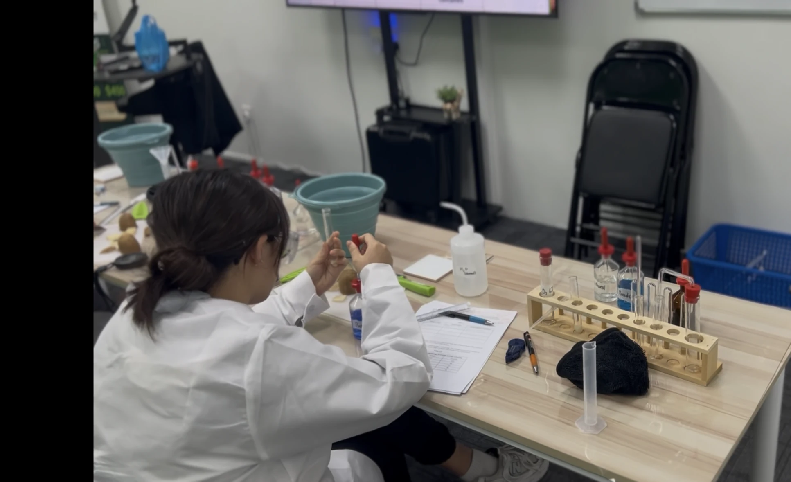
Try it without the risk
Join a Trial Lesson. If You Didn’t Absolutely Love It, Get a Full Refund.
A trial lesson is $95. We’re so confident of our lesson quality that if you didn’t absolutely love it, simply ask for a refund and you’ll get your money back, no questions asked.
Book My Trial LessonA good match matters
Is ThatBioTutor Right for You?
This is for:
- Students taking O Level Pure/G3 Biology in Sec 3 or Sec 4.
- Students who feel very lost in the content, or just need a few concepts strengthened.
- Students who know the content but blank out on OEQs and lose marks anyway.
- Students who genuinely want to improve in Bio, out of their own drive, not because someone else is forcing them.
- Students based in Singapore who can attend physical or online classes.
This isn’t for:
- Students taking Combined Science Biology, not Pure/G3.
- Students based outside Singapore.
- Students only joining because their parents are making them, without wanting to improve themselves.
- Students who aren’t committed to putting in the work required to ace the subject.
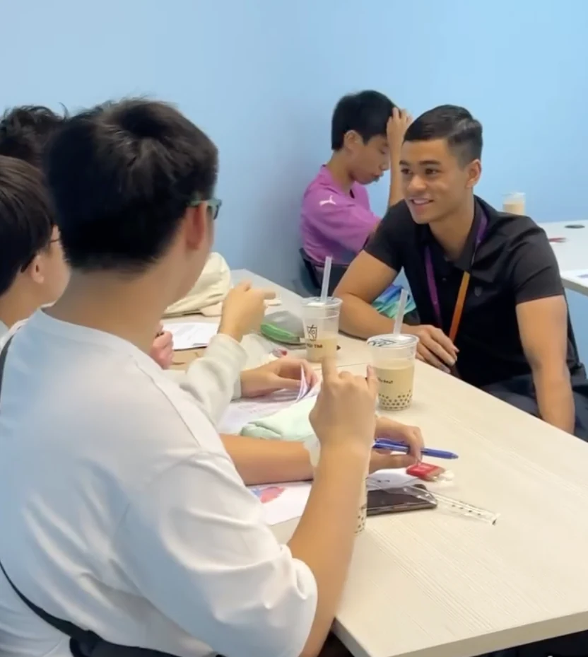
Why TBT exists
About the Founder
I was a GEP student, went through Raffles Institution, and was offered a scholarship by NUS to study Life Sciences. On paper, that probably sounds like someone who never struggled in school.
In JC, my grades started slipping and I finally took Econs tuition. That's when I first understood what a genuinely good tutor could do. I learned how to memorise content in a smarter way, and how to actually answer questions in a way that scores, and it turned a subject I used to dread into one I topped the class in.
That inspired me to build ThatBioTutor, because I wanted other students to have that same experience with Biology. That feeling, trying hard and still not getting anywhere, is exactly why I built the FastTrack System.
— Mr Keefe, founder of ThatBioTutor
Straight answers
Frequently Asked Questions
Yes. Students can choose between attending online or physically.
Notes, flashcards, lesson clips, extra practice papers, WhatsApp help, and snacks for physical lessons. All are included for students.
It isn’t compulsory, though students are encouraged to respond through the Zoom chat.
A handful of questions a week, highly manageable. We don’t believe in overloading students. It is not compulsory, but completing it earns Homework Points for rewards.
Physical classes are capped at around 20–25 students. A trial lesson is the best way to experience how the class works.
We specialise exclusively in O Level Pure/G3 Biology, Pure Bio only, not Combined Bio. Sec 3 classes open in March each year.
No. And that’s actually a good thing. Good tutors transition to group teaching eventually because of demand, and it lets us build resources, notes, CAQs, and memory shortcuts specifically for this syllabus, which a one-to-one tutor never could. Students still get one-to-one access for questions on WhatsApp anytime and get help the same day instead of waiting seven days.
No. TBT has a team of specialist tutors, with content and teaching methods standardised across the team.
The trial class is $95. Message us on WhatsApp for current timeslots and updated class pricing.
Learn, laugh, refuel
Life Inside a TBT Classroom
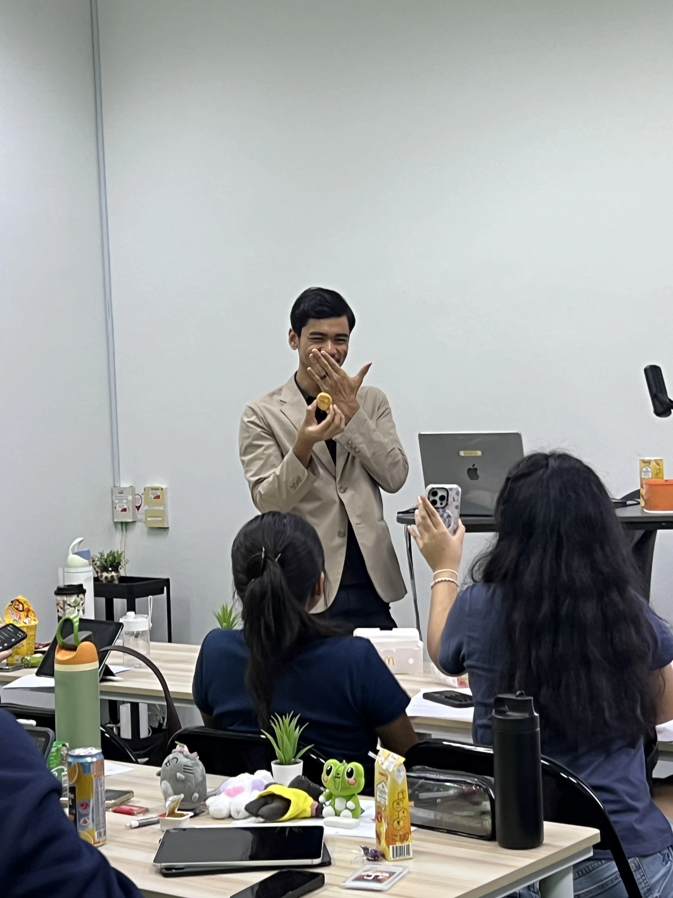
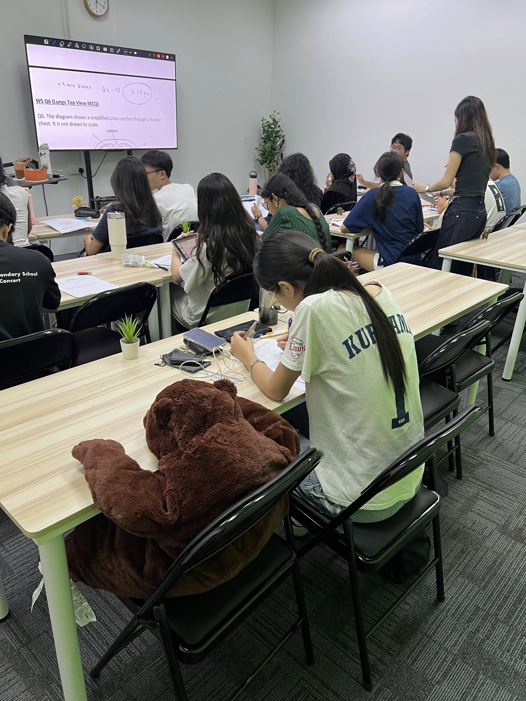
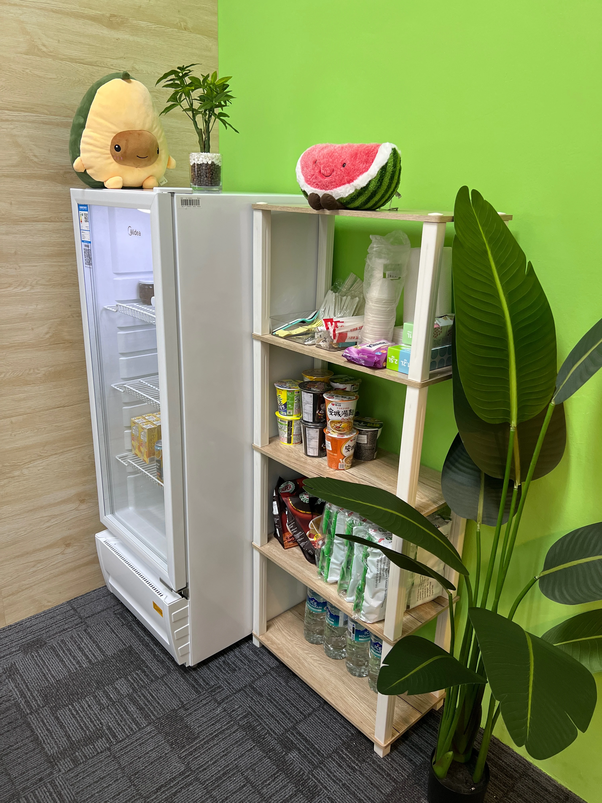
There’s room for Biology and a life
Bio Doesn’t Have to Eat Up Every Other Part of a Student’s Life.
Students shouldn’t have to give up their CCA. Or their friends. Or their other subjects, just to keep their Biology grades afloat.
That’s exactly why I built the FastTrack System. The notes, the shortcuts, and the support are already done for them. Studying smart takes a fraction of the time it used to.
Students still get to have a life outside textbooks. And score the grade they know they’re capable of.
Ready to see what that actually feels like?
Book My Trial Lesson